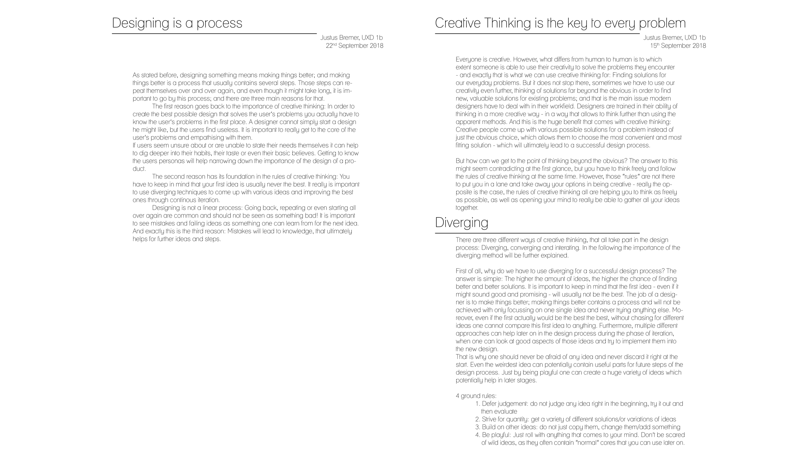
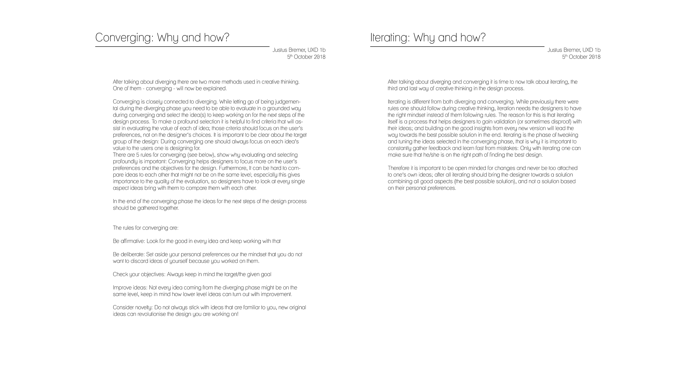

The Project
The project for the course Design & was to create a portfolio showing an implication of the steps needed in the design process. Moreover, by taking part in a design challenge in which we were asked to come up with a design that could help with spicing up waiting times during traveling we used the theory of the design process in a theoretical scenario.
About the course
The course Design &Creativity is described as follows in its course guide:
"Creativity is a crucial ingredient of design. In this course we will explore what creativity means for the design process and how you can use creativity in this process. And since visualizing ideas, concepts and messages is an important skill to enhance your creativity and to cooperate with others in design processes, a significant part of this course focusses on developing your visualizing skills."
The Portfolio
Have a look at the gallery below for pictures of the final portfolio!
Assignment: create a logo for the course
The Design Process, Creative Thinking & Diverging
The importance of Converging and Iterating
If you want to see the whole portfolio make sure to contact me via the links below!